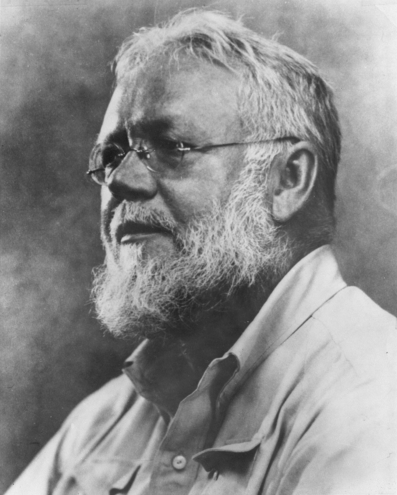
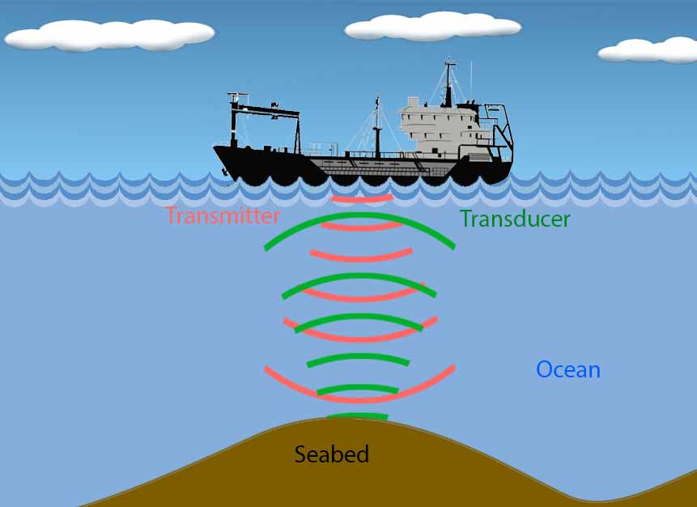
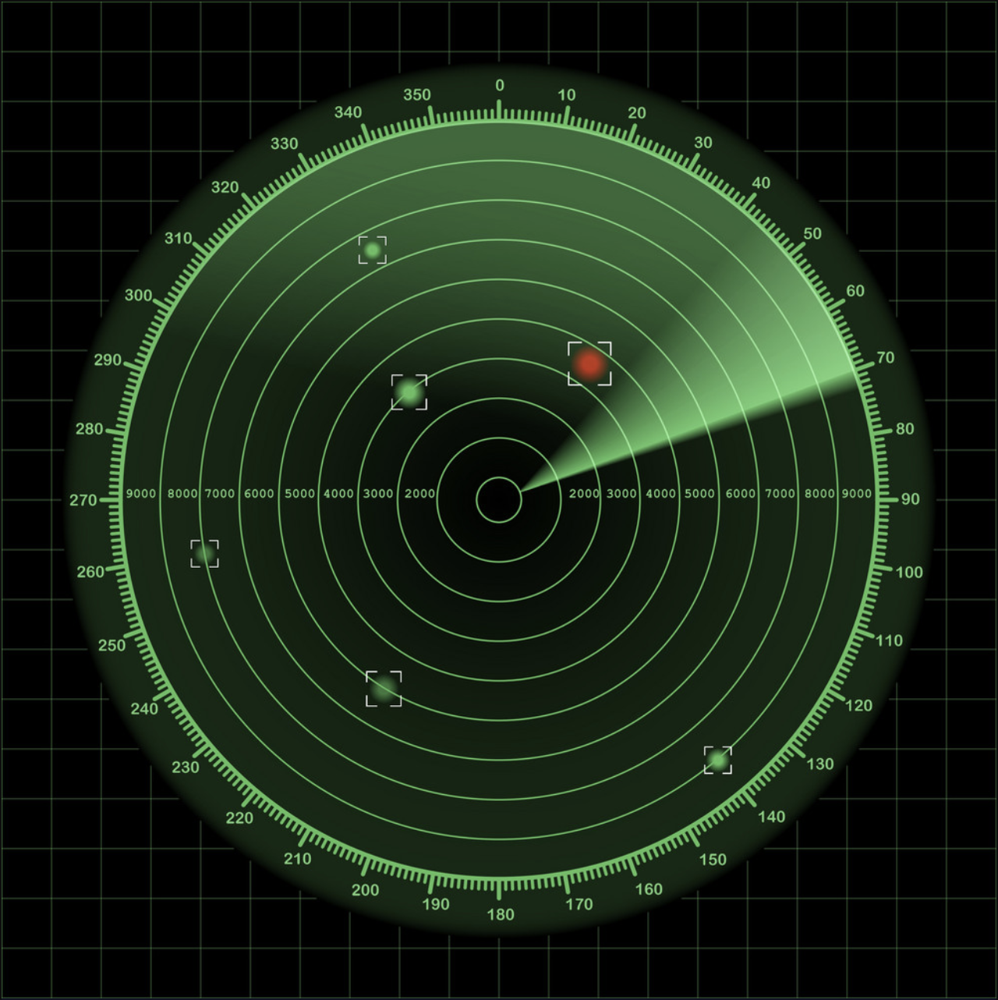
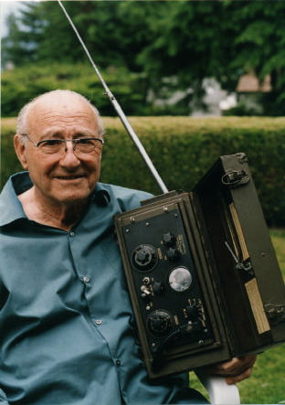
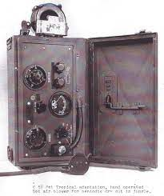
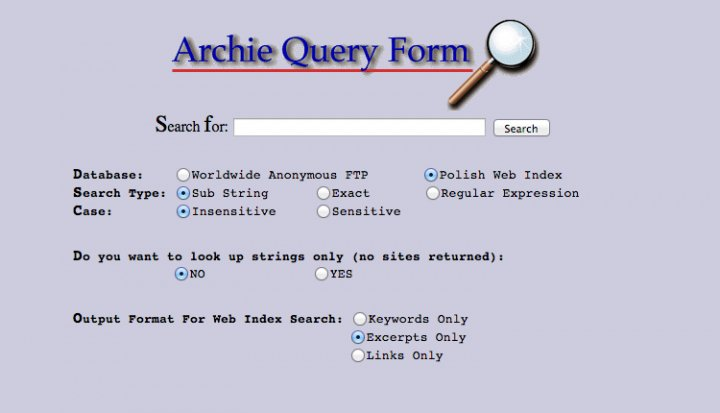
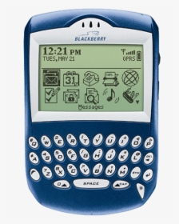
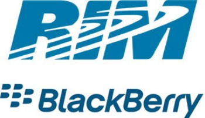

Reginald Fessenden - The Sonar, 1912.
Reginald Fessenden began his career for transmitting sound through the air, but he gained his reputation for transmitting it through water. Having signed a contract to deliver a hydrophone, he instead made a transducer that could both send and receive sound data. According to the Science History Institute website, he called it “the Fessenden oscillator, lest anyone forget its origin.” This device looked like a loudspeaker, and it could be attached to a ship or placed directly in the water. It worked by creating sounds and then identifying sounds that came back in the same frequency. The Science History Institute website describes an early test of the sonor device taking place when it was dropped into cold water at a depth of 10 feet to identify ice with Fessenden holding a stopwatch. After the power was turned on and the oscillator generated its sound, “The ping sped through the frigid seawater at about 4,800 feet per second: at 540 hertz it was about the same pitch as a dial tone—but loud. The sound waves hit the iceberg, refracting at different angles. A little more than a second later the echo returned to the oscillator, cuing Fessenden to stop the watch.” By calculating the speed of sound through the water and the length of time it took for the ping to go out and return, it was now possible to identify the distance of underwater objects from the boats that need.
 Walkie Talkie – Donald Lewes Hings, 1937.
 Walkie-talkies require a speaker and a microphone, but in some devices the speaker can be used as a microphone. Since walkie-talkies use radio frequencies to communicate, they require an antenna. Users need to push a button to turn the device into a transmitter in order to talk and can receive messages when the device is a receiver. With half-duplex walkie talkies, it is only possible to have one person to transmit at a time, though many people can receive the communication. With full-duplex walkie talkies or two-way radios it is possible to transmit and receive at the same time. Walkie-talkies were used effectively during World War II when tens of thousands of models weremanufactured and shipped worldwide. The Model C-58 Pack Set wasespecially popular. According to the website twoway-radio.com it“included a range of antennas and power supplies, voice scramblers toprotect privacy and enhance security and even a filter to removebattle noises from communications so messages could be received loudand clear even during gunfire and engine noise.”
Archie, First internet search engine – Alan Emtage, 1990.
The search engine Archie was made in 1990 by Alan Emtage, Bill Heelan and Peter Deutsch at McGill University in Montreal. It had very narrow search parameters and it looks nothing like the search engines that we use daily. According to the website Stackscale, the name “Archie comes from the word ‘Archive,’” but it has also been “associated with the Archie comics.” It was an index of FTP files and allowed users to look around the internet in a limited way. This engine could make simple requests for searching files, which had to be downloaded to see if they were the correct files. It could only recognize the titles of files or certain terms. By 1993, acoording to Stackscale, Archie “had about 50k queries per day and a few thousand users around the world.” Search engines have expanded and upgraded over time making it easy and quick to let users have a good experience. Archie made it easier for more advanced search engines to be made. Most of those search engines use many techniques developed in the creation of Archie, and “The University of Warsaw in Poland still maintains an active legacy Archie server.”
Java coding Language – James Gosling, 1995.
Java is one of the world's most popular programming languages. It is used in almost every piece of software we use today. Did you know that James Gosling, the creator of Java, is Canadian? When Gosling began working on Java in June 1991, his main goal was to create and maintain a virtual machine and language with a well-known notation like C but more precise and simpler to use. According to the Jigsaw website, “In 1995, Java 1.0 was the first public version of the language. Its motto was Write Once, run anywhere.” Some of the benefits of Java is that it was very safe to use. Soon, the leading web browsers started to include it in their standards. Today, Google recommends that android app developers use Java to build their apps or games. It allows web developers to make projects with APIs without adding extra code. Having become open source, Java has continued to develop thanks to the community and oracle. Java is the framework for programming most software in 2022, including this website.

BlackBerry mobile device - Research in Motion Ltd. (RIM), 1999.
Research In Motion (RIM) introduced the BlackBerry mobile device in February 1999. The BlackBerry served as a mobile phone as well as a system for e-mail delivery. What made the BlackBerry special was that e-mail messages were pushed from the user’s computer or corporate server—including the BlackBerry Enterprise server—to the user’s BlackBerry without them needing to dial in to retrieve messages. This meant that the BlackBerry was always connected when it was turned on, and there was no need to turn it off. The BlackBerry predated the iPhone, so its closest competitor in the category of mobile e-mail devices was the Palm VII PDA, which cost $599 compared to $399 for the BlackBerry. While both devices included an address book, calendar, task list, and alarm clock features, the BlackBerry notified users of new messages while the Palm VII did not. When it was introduced, the BlackBerry had its service provide by BellSouth's wireless network in the United States and the Cantel AT&T wireless data network in Canada, and the monthly service charge was $40.
